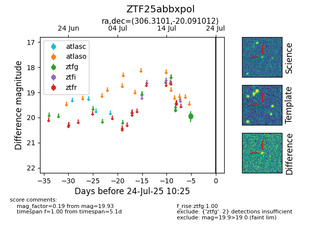

Target ZTF25abbxpol at 2025-07-24 10:25, see:
FINK: fink-portal.org/ZTF25abbxpol
Lasair: lasair-ztf.lsst.ac.uk/objects/ZTF25abbxpol
ALeRCE: alerce.online/object/ZTF25abbxpol
alt names
ZTF25abbxpol (ztf,fink)
coordinates:
equatorial (ra, dec) = (306.3101,-20.09101)
galactic (l, b) = (24.0071,-29.29213)
photometry
last ztfg=19.93
2 ztfg detections
